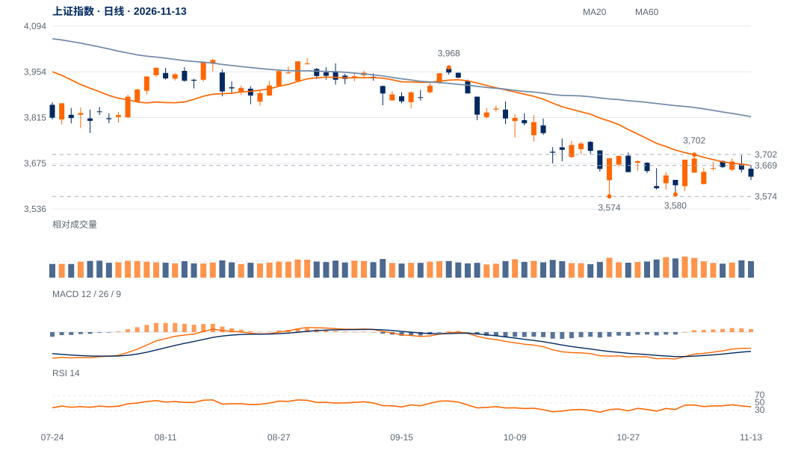

双谷有形，确认不足
10月23日3574.27与11月3日3580.38仅差0.17%，但中间反弹仅3.75%、谷距7日；3708.20中峰未突破。局部双谷值得观察，不能视作成熟大底。
低位支撑尚在，但反弹没有完成结构反转。当前更倾向再次测试3624及3574—3580，只有重夺中峰并保持，才能提高底部成立的判断。

查看大图 ↗先收复3669，再检验3702的原连续两日条件及3708中峰保持。
3574旧结构底线失守，撤销当前守底解释；不下移旧线。
10月23日3574.27与11月3日3580.38仅差0.17%，但中间反弹仅3.75%、谷距7日；3708.20中峰未突破。局部双谷值得观察，不能视作成熟大底。
11月5日3701.59于12日完成右侧确认，仍低于3708.20；本周最高3699.58，再次未越过原高区。13日收3634.35，回到20日线下方。
10月30日以来尾段历时10日、净升仅0.98%，日均量约为前跌波1.10倍。量未明显不足，但价格推进有限，支持低效修复而非趋势突破。
3574—3580尚未失守，20日OBV方向余额仍正；卖方尚未完成对旧低的突破。低位拒绝下跌并重新收回3669，将削弱短线偏弱解释。